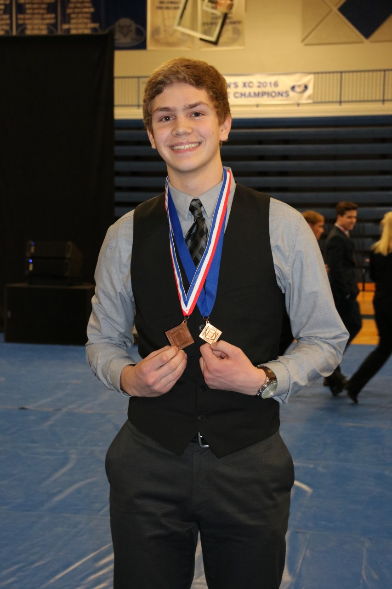
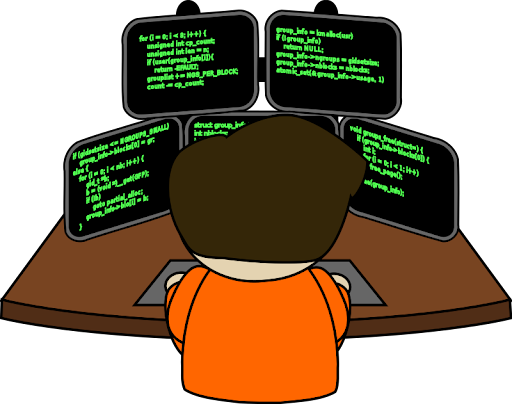

Achievement #1 - High School Soccer Success
I played on my high school’s soccer team for all four years that I attended but we were never very good up until the very end of my last season when we ended up making a deep run in the postseason. I was one of the starting defensive center backs for our team so it felt great to know that I was having a direct impact on the success of our team. We ended up getting knocked out in the state semi-finals (the best our team had ever done), and I received an All-State honorable mention for my play. (I’m pictured far right - #17)
Achievement #2 - DECA State Finalist x2
DECA is a high school and collegiate business organization that hosts competitions where students from all over the country compete in business-related challenges and case studies at the regional, state, and national level. In my two years in DECA I placed 2nd at the state conference twice in a row for my individual event, but for my senior year I was also a part of a group event that successfully advanced to the national conference in Atlanta. Unfortunately we did not place at the national level but I still credit this experience for developing the foundation of my business skills. (Pictured left after winning at regionals - 2017)

Achievement #3 - Programmed a New Voting System
I am a member of the Phi Chi Theta professional business fraternity at MSU where I have served as the Tech Committee chair for almost two years now. When I was elected, the system that was used to calculate votes for new pledges was hard-coded into our fraternity’s website, which unfortunately got hacked and resulted in everything being lost. Because of this, I had to construct an entirely new voting system using Google Forms and python scripts to collect and tabulate the pledge votes during our rush season. It is the single largest project I have ever developed and I consider it to be one of my greatest achievements to date.
